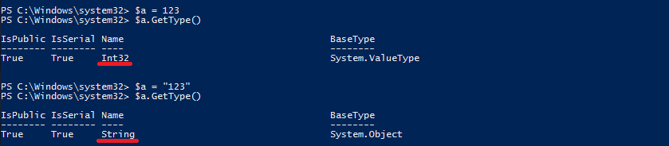
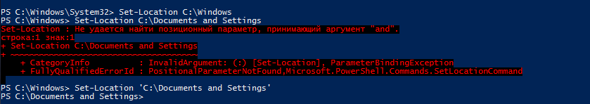
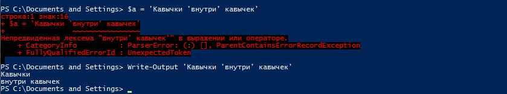
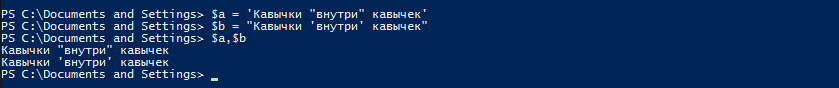

Кавычки в PowerShell
Строковые значения в PowerShell встречаются довольно часто. Как правило, они передаются командам как аргументы. Иногда строки заключаются в двойные или одинарные кавычки, а иногда обходятся без них. Неправильно поставленные (или не поставленные) кавычки являются причиной множества ошибок в коде, поэтому очень важно помнить правила работы с кавычками: когда текст нужно заключать в кавычки, когда нет и когда какой тип кавычек лучше использовать.
Для начала посмотрим, что дает нам использование кавычек. В качестве примера назначим переменной $a значение 123 и выведем ее тип данных:
$a = 123
$a.GetType()
Затем сделаем то же самое, только значение переменной заключим в кавычки:
$a = ″123″
$a.GetType()
В первом случае переменная имеет тип данных Int32 (32-разрядное число), а во втором String (строка).

Из примера видно, что наличие кавычек однозначно указывает на то, что объект имеет тип String. Другими словами, когда текст заключается в кавычки, PowerShell рассматривает его как строку.
Надо сказать, что PowerShell и сам умеет определять тип данных. Так если значение состоит из одних цифр, то объект определяется как числовой, если же в значении содержится хотя бы одна буква, то PowerShell определяет объект как строку, вне зависимости от наличия\отсутствия кавычек.
В большинстве случаев кавычки можно не ставить, если аргумент представляет из себя строку без пробелов. Для примера сменим текущую директорию командой:
Set-Location C:\Windows
Хотя путь к директории указан без кавычек, тем не менее команда успешно выполнена. А вот такая команда обязательно вызовет ошибку:
Set-Location C:\Documents and Settings
Дело в том, что для интерпретатора пробел означает завершение команды, поэтому следующее за пробелом слово and определяется как параметр. Поскольку параметра с таким именем у командлета Set-Location нет, генерируется ошибка. Проблема решается просто, достаточно путь заключить в кавычки, например так:
Set-Location ′C:\Documents and Settings′

С назначением кавычек более-менее разобрались, переходим к их типам.
В PowerShell можно использовать два типа кавычек — одинарные и двойные. В большинстве случаев не важно, какой тип использовать. Для примера возьмем две переменных и присвоим им одинаковое значение. У переменной $a значение поместим в двойные кавычки, а у $b в одинарные:
$a = ″Текст в кавычках″
$b = ′Текст в кавычках′
Выведя содержимое обоих переменных, получим одинаковый результат.
Как видите, для выделения обычного текста, не содержащего каких либо специальных символов или переменных, подойдет любой тип кавычек. Однако есть несколько ситуаций, когда тип кавычек имеет значение.
В тексте содержится переменная
Если в строку, заключенную в кавычки, надо вставить значение переменной, то необходимо использовать двойные кавычки. При использовании одинарных кавычек все, что находится внутри кавычек обрабатывается как тест, вне зависимости от содержимого. Только при наличии двойных кавычек PowerShell ищет внутри текста знак $ и подставляет вместо имени переменной ее значение. Например:
$c = ′строка′
$a = ″$c в кавычках″
$b = ′$c в кавычках′
Если теперь вывести значения переменных $a и $b, то в первом случае будет выведено значение переменной, а во втором ее имя.
Добавление специальных символов
Только двойные кавычки дают возможность использовать специальные символы внутри текста. В тексте, ограниченном двойными кавычками, PowerShell ищет управляющий символ — обратную одинарную кавычку (`) и выполняет следующий за ней спец. символ.
Примечание. Вывести список спец. символов можно командой Get-Help about_special_characters.
В качестве примера попробуем отформатировать текст, вставив в него символ n (перенос строки):
$a = ″`n Строка 1 `n Строка 2 `n Строка 3 `n″
$a = ′`n Строка 1 `n Строка 2 `n Строка 3 `n′
Как видите, спец.символы в двойных кавычках обработаны правильно, а в одинарных просто выведены на экран.
Кавычки в кавычках
Иногда может потребоваться выделить текст внутри кавычек. Но использовать один тип кавычек дважды не получится, например при попытке создать переменную мы получим ошибку:
$a = ′Кавычки ′внутри′ кавычек′
а командлет Write-Output не выдаст ошибку, но добавит после первой пары кавычек перенос строки:
Write-Output ′Кавычки ′внутри′ кавычек′

Поэтому, если нужно использовать кавычки в строке, то придется их комбинировать — добавлять двойные кавычки внутри одинарных или одинарные внутри двойных:
$a = ′Кавычки ″внутри″ кавычек′
$b = ″Кавычки ′внутри′ кавычек″

При работе с переменными надо помнить, что для PowerShell значение имеет только внешняя пара кавычек. Например так мы получим только имя переменной:
$c = ′внутри′
$a = ′Кавычки ″$c″ кавычек′
а вот так ее значение:
$a = ″Кавычки ′$c′ кавычек″
И еще, говоря о кавычках, стоит упомянуть о такой вещи как экранирование. Специальный символ (кавычка, знак $ и пр.), следующий за обратной кавычкой (`), экранируется — воспринимается не как специальный, а как обычный строковый символ. Поэтому при использовании кавычек внутри кавычек внутреннюю пару кавычек можно экранировать:
$a = ″Кавычки `″внутри`″ кавычек″
Тогда они будут выведены как обычный текст.
Экранирование работает только с двойными кавычками. При попытке экранировать символы в строке, заключенные в одинарные кавычки, управляющий символ никак не повлияет на исходные данные.